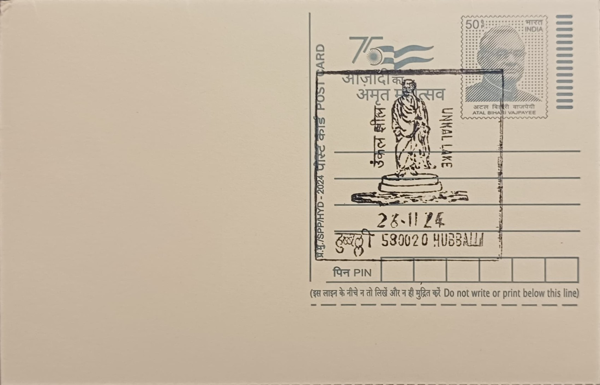

Unkal Lake
ಉಣಕಲ್ ಕೆರೆ


Unkal Lake takes its name from the locality of Unkal, now a residential and commercial neighbourhood absorbed into greater Hubballi, Dharwad district, Karnataka. The settlement itself is of considerable antiquity, best attested by the nearby Chandramauleshwara temple, an eleventh-century Shiva shrine built in the Kalyana Chalukya architectural idiom, which indicates that the area was an established centre of habitation and patronage well before the modern city grew around it. While the lake's own construction cannot be dated with certainty to the Chalukya period, its long association with the locality's name and its proximity to this temple have led local tradition to link the tank to that same era of water-management works that dotted the Deccan plateau under Chalukyan and later rule.
As a waterbody, Unkal Lake belongs to the broader category of South Indian irrigation tanks, artificial reservoirs engineered to capture seasonal monsoon runoff and release it through the dry months for drinking water, irrigation, and allied uses. Spread over roughly 200 acres within what is now the Hubballi-Dharwad urban agglomeration, it has long ranked among the twin cities' principal water sources, supplementing groundwater and later piped supply schemes. Its significance is thus civic and historical rather than religious: it represents one of the oldest surviving pieces of municipal infrastructure in the Hubballi-Dharwad region, predating the railway town that grew up around it and continuing to function as a public amenity even after its original water-supply role diminished.
The lake's documented role in organised water supply dates to the early twentieth century, when the engineer Sir M. Visvesvaraya, serving in the princely state administration, was associated with designing pumping and piping works that drew on Unkal Lake to channel filtered drinking water to Hubballi and Dharwad around 1910 to 1912. This scheme marked the transition of the tank from a purely agrarian irrigation source to a formal urban utility asset, an engineering adaptation characteristic of many traditional Deccan tanks that were retrofitted with colonial-era waterworks as the surrounding towns industrialised and expanded along the rail corridor. The lake bed and its feeder channels, including the Unkal Nala, continued to anchor the local hydrology even as the city built up around its margins in subsequent decades.
A notable feature of the lake today is the public garden and walking promenade developed along its banks, part of a broader push to convert the tank into a recreational green space for the twin cities. Under the Hubballi-Dharwad Smart City Mission, authorities constructed a roughly five-kilometre walking and cycling track encircling sections of the lake, alongside landscaped gardens, seating areas, and lighting, turning what had been a utilitarian reservoir into one of the more frequented leisure spots for residents of both cities. The same period saw renewed public attention on the lake's water quality, as decades of untreated sewage inflow and encroachment along its catchment had visibly degraded it, prompting civic groups and local media to press for a cleaner, better-managed lakefront.
Rejuvenation work carried out under the Smart City programme has included sewage diversion lines and drain works intended to stop waste water reaching the lake directly, planned as part of an extended stretch covering several kilometres of the Unkal Nala catchment, though reports from municipal oversight bodies indicate that some sewage discharge has persisted even after the initial phase of works, leaving further diversion and treatment infrastructure under continued execution. The lake today falls under the joint oversight of the Hubballi-Dharwad Municipal Corporation and the Smart City Limited special purpose vehicle, which between them manage its park facilities, water quality monitoring, and incremental de-silting and bank-strengthening works. Visitors to Hubballi still use its promenade for daily walks and evening recreation, even as the civic agencies work through the slower, ongoing task of restoring the water body's ecological health.
| Date of Introduction | November 26, 2024 |
|---|---|
| Address | Senior Postmaster, |
| Hubballi HO, | |
| Dharwad (dt.), Karnataka - 580020. |